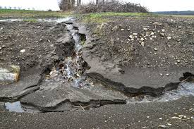

Healthy Soil. Better Yields.
Check Soil
Identify your soil type and get practical solutions with pictures and voice support.
Causes
Learn what human and natural activities harm the soil, with real examples.
Prevention
Discover simple, eco-friendly methods to protect and restore soil health.
Help & Audio
Step-by-step guide to using this website effectively in your own language.